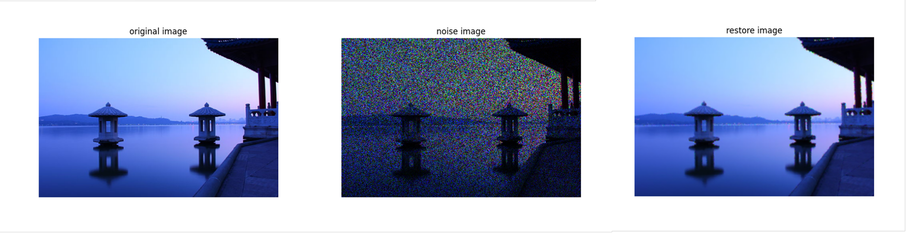
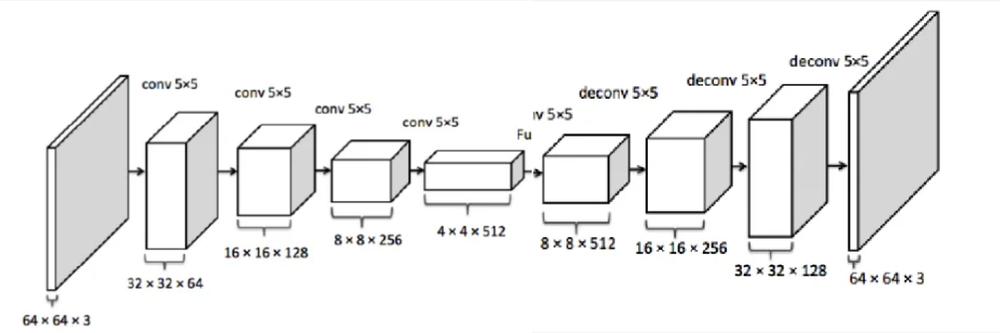

Image Denoising and Restoration
Images are commonly used information carriers. However, they are susceptible to noise during acquisition, transmission, or storage. Removing noise and recovering the original visual content is a crucial task in computer vision.
Noise Generation
Given an original image \( I \in \mathbb{R}^{H \times W \times C} \), a binary noise mask \( M \in \{0, 1\}^{H \times W \times C} \) is applied to produce the corrupted image:
\[ X = I \odot M \]

Image Restoration Methods
1. Mean Filtering
Mean filtering replaces each pixel value with the average of its neighboring pixels. It includes the following types:
- Arithmetic Mean Filter 
- Harmonic Mean Filter
- Geometric Mean Filter
2. Median Filtering
Median filtering is a nonlinear technique that replaces each pixel with the median value in its local neighborhood. This helps eliminate isolated noisy pixels while preserving image structure.
3. KNN Filtering
For each pixel, we compare it with surrounding pixels in an \( N \times N \) window using a distance metric (e.g., Euclidean distance). The K nearest neighbors are selected, and their RGB values are averaged to reconstruct the pixel.

4. Deep Image Prior (DIP)
Deep Image Prior is a neural network method for denoising and restoration that requires no training dataset. It leverages the network's inherent bias to natural image statistics.
We use an encoder–decoder structure where the image is downsampled (via convolution) and then upsampled (via transposed convolution). Early stopping is applied to prevent the network from fitting the noise.
Denoising

Noise
Recovery
Inpainting

Noise
Recovery